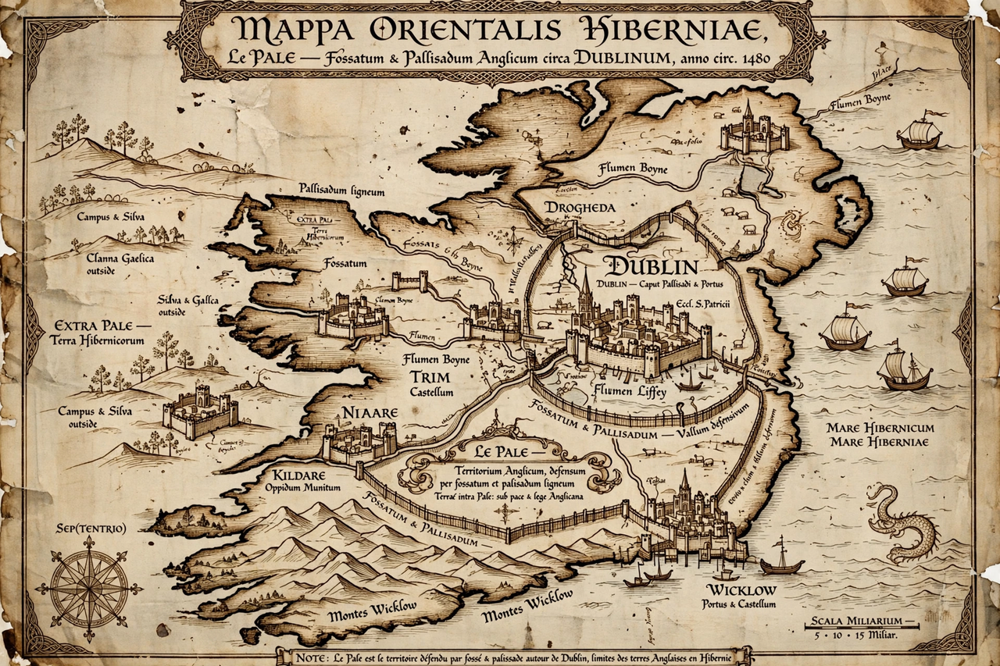

| The Pale | |
|---|---|
| Region | Eastern Ireland, centred on Dublin |
| Period | Late Middle Ages (c. 12th–16th centuries) |
| Counties | Dublin, Meath, Kildare, Louth (the "four obedient shires") |
| Administered from | Dublin Castle |
| Legacy phrase | "Beyond the Pale" |
The Pale (Irish: An Pháil) was a strip of land, centred on Dublin, that stretched from Dundalk in Louth to Dalkey in County Dublin, which came to be the area under the direct control of the English government in late medieval Ireland. The term derives from the Latin palus, a stake — referring to the fortified ditch and palisade erected around the territory's frontier to protect it from raids by Gaelic Irish clans.
After the Norman invasion of Ireland (from 1169), English control contracted over time as the descendants of the invaders — the Old English — became Gaelicised ("more Irish than the Irish themselves"). By the 15th century, effective royal authority was largely confined to the Pale: the counties of Dublin, Meath, Kildare, and Louth. A statute of 1488 defined its boundaries, and in 1494–95, under Lord Deputy Edward Poynings, a defensive rampart was ordered built along the frontier. The Pale's parliament at Drogheda passed Poynings' Law, subordinating Irish legislation to the English Privy Council.
The Pale's loyal, English-speaking community of merchants, lawyers, and gentry looked to England for law and protection, distinguishing itself culturally from both Gaelic Ireland and the Old English lordships beyond. With the Tudor conquest of Ireland in the 16th century, the distinction lost its purpose, though Dublin and its hinterland retained their character.
The phrase beyond the pale — meaning behaviour outside the bounds of civilisation or acceptability — is popularly derived from the Pale's boundary, beyond which English law was said not to run. The phrase is first attested in the 17th century, and its precise origin is debated, but the association with Ireland's Pale is the standard explanation.
Dublin Castle · Acts of Union 1800 · Irish War of Independence